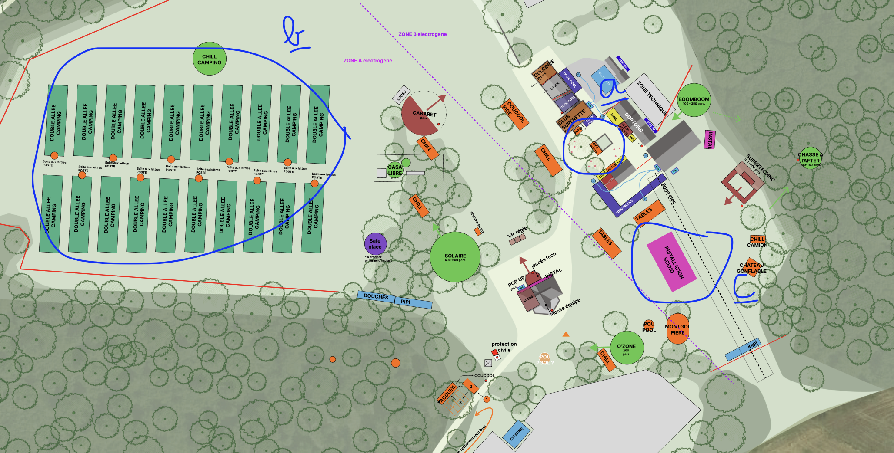

Le Ministère du Coucourier, des Objects Perdus, Trouvés, Coupés, Décalés

Le ministère du coucourier, accompagné d'Elise supereros, a répartit ses troupes cette année sur 3 zones:
- a- Une première zone sur coucool village pour la collecte du Coucourrier directement attenante au stand bénévole. Un groupe de bénévole prog off s'occupera d'animer cet espace.
- b- Une seconde zone sur le camping organisé cette année en allés dont chacune portera le nom d'une micronation parmi celles-ci :
- REPUBLIQUE DE KALAKUTA :
Le musicien Fela Kuti déclare sa maison à Lagos indépendante. En 1978, un assaut de l’armée nigériane brûle et rase la république.
- PRINCIPAUTE DE SEALAND :
Plate-forme militaire de la Seconde Guerre mondiale dans les eaux internationales au large de l’Angleterre occupée et puis déclarée État indépendant par Paddy Roy Bates.
- brOTHER WORLD KINGDOM :
Monarchie absolue matriarcale, à thème BDSM, dans laquelle les lois des femmes prévalent sur les droits des hommes.
- WAVELAND :
Le 10 juin 1997, Greenpeace occupe l’île de Rockall, en action de protestation contre les actions de recherche pétrolière organisées sous autorité britannique. Le 15 juin, l’île est proclamée indépendante sous le nom d’« État global du Waveland ». L’occupation durera 42 jours en tout.
- FRESTONIA :
Le quartier autour de Freston Road, dans l’ouest de Londres, fait « sécession » du Royaume-Uni. Des artistes s’emparent alors des lieux. Les promoteurs immobiliers viennent finalement à bout de l’idée Frestonia.
- REPUBLIQUE LIBRE DU FRIOUL :
Jean-Claude Mayo, propriétaire du fort de Brigantin, et quelques amis décident de fonder la République libre du Frioul, une galéjade sous forme de micronation, car « dans notre société, on n’a jamais le droit de faire le con ».
- EMPIRE D'ANGYALISTAN :
Micronation qui réclame la ligne d’horizon comme territoire.
Très active dans les organismes internationaux liés aux micronations.
- VILLE LIBRE DE CHRISTIANIA :
Quartier de Copenhague au Danemark, autoproclamé « Ville libre de Christiania », fonctionnant en communauté intentionnelle autogérée, fondée en septembre 1971 par un groupe de squatters, chômeurs et hippies.
- KUGELMUGEL :
Maison en forme de ballon, construite par l’artiste Edwin Lipburger, située dans le Prater de Vienne et “indépendante” (mais gérée par la ville depuis 2015.)
- REPUBLIQUE LIBRE DE WENDLAND :g
La « République libre de Wendland » est une micronation, créée en mai 1980, par un millier de militants écologistes et antinucléaires allemands dans la région de Gorleben, dans le land de Basse-Saxe. Gorleben est le lieu de stockage des déchets nucléaires choisi par le gouvernement allemand. Des passeports ont été imprimés. La zone est réinvestie par des milliers de policiers, quelques semaines plus tard.
- c- Une dernière zone au niveau du festival de cannes à pêches pour une invitation au voyage, passage des enregistrements de cartes postales collecté par RaphE, écriture de lettres et chill
bureau 564567